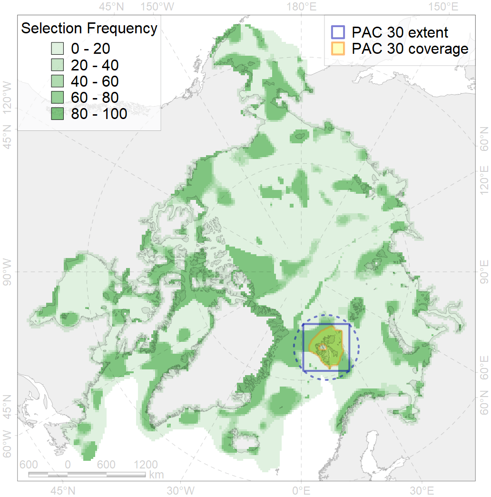
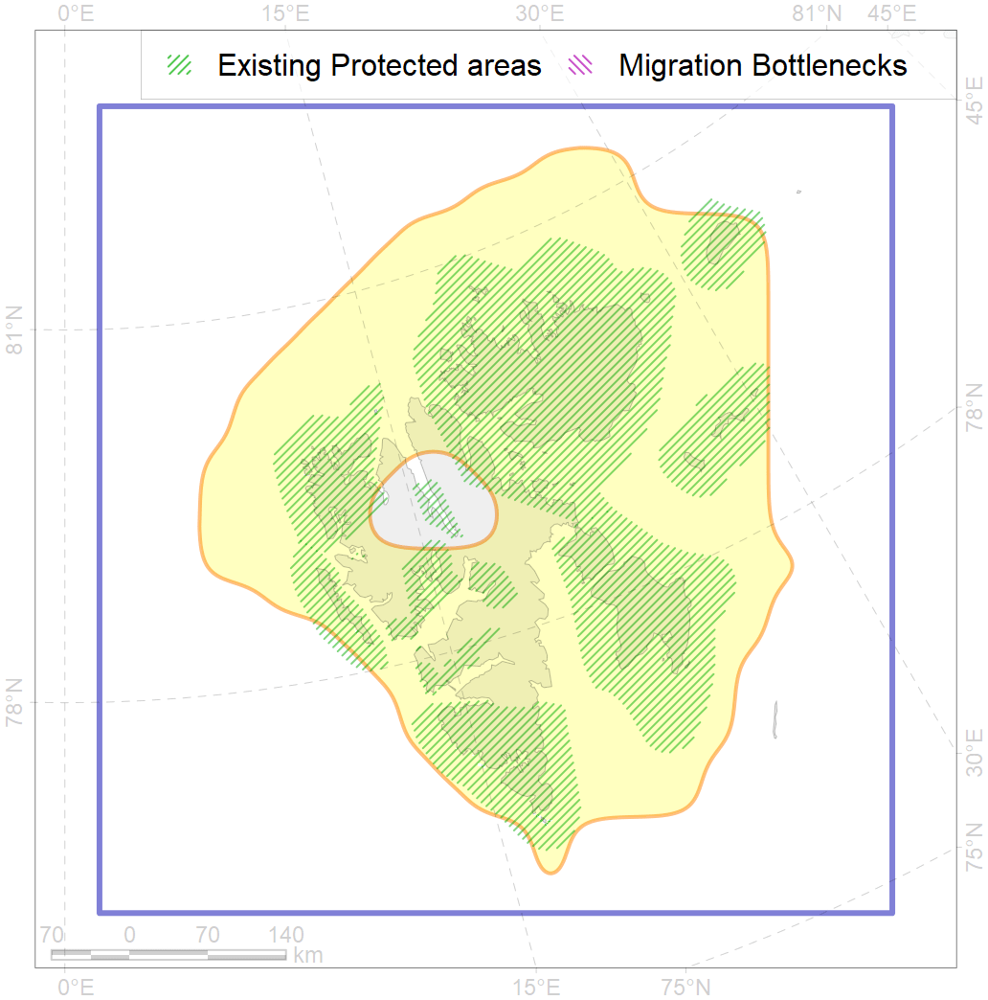

30
For more information regarding this PAC and to conduct custom spatial analysis using the PAC data or any spatial query, please consult Accenter.

2
CFs entirely within the PAC area
27
CFs at least 25% within the PAC area
27
CFs with at least 50% of their target achieved in the PAC
44
CFs with at least half of their target achieved in the PAC
| CF ID | CF Name | Proportion in the PAC | Conservation Target | Contribution to ArcNet Target Achievement | PAC’s Contribution to the Achieved Target |
|---|---|---|---|---|---|
| 7238 | Kelp forests of Spitsbergen | 100.0% | 30.0% | 316.7% | 100.0% |
| 2051 | Ringed seal whelping areas in the Spitsbergen region | 100.0% | 18.0% | 555.6% | 100.0% |
| 5028 | Beluga of the Svalbard stock summer core distribution | 100.0% | 54.0% | 169.2% | 100.0% |
| 2039 | Ringed seal foraging areas in the Spitsbergen region | 99.9% | 18.0% | 541.3% | 99.9% |
| 8044 | Spitsbergen glacial termini | 98.5% | 30.0% | 327.2% | 99.5% |
| 6033 | Little auk (Alle alle alle) breeding colonies in Spitsbergen | 96.4% | 54.0% | 176.8% | 97.4% |
| 6042 | Ivory gull (Pagophila eburnea) Spitsbergen breeding colonies | 95.7% | 64.8% | 144.1% | 99.8% |
| 3015 | Fast ice distribution in the Spitsbergen region | 95.0% | 6.0% | 1528.9% | 97.9% |
| 5027 | Beluga of the Svalbard stock summer distribution | 94.9% | 36.0% | 258.3% | 98.2% |
| 3121 | Polynyas distribution in the Svalbard region | 94.7% | 12.0% | 775.0% | 96.9% |
| 6056 | Common eider (Somateria mollissima borealis) Spitsbergen breeding&moulting grounds | 90.1% | 55.2% | 159.7% | 91.6% |
| 2018 | Harbour seal whelping and moulting areas in Spitsbergen region | 76.7% | 36.0% | 213.1% | 94.3% |
| 1008 | Atlantic Walrus haulouts in Spitsbergen and FJL region | 76.5% | 82.8% | 92.3% | 79.9% |
| 6022 | Atlantic puffin (Fratercula arctica naumanni) breeding colonies | 71.3% | 72.0% | 97.5% | 73.9% |
| 6098 | Ivory gull (Pagophila eburnea) Spitsbergen breeding colonies buffer feeding area | 70.9% | 43.2% | 160.6% | 93.7% |
| 6093 | Little auk (Alle alle alle) breeding colonies in Spitsbergen buffer feeding area | 58.7% | 36.0% | 158.9% | 74.4% |
| 2015 | Bearded seal whelping areas in Spitsbergen region | 56.1% | 18.0% | 303.7% | 77.3% |
| 6082 | Thick-billed murre (Uria lomvia lomvia) breeding colonies | 43.6% | 72.0% | 59.5% | 50.7% |
| 1005 | Atlantic Walrus Winter Distribution in Spitsbergen and FJL region | 42.5% | 27.6% | 149.6% | 57.9% |
| 6090 | Atlantic puffin (Fratercula arctica naumanni) breeding colonies buffer feeding area | 34.3% | 48.0% | 69.5% | 44.1% |
| 6009 | Brent goose (Branta bernicla hrota) Greenland, Svalbard and FJL breeding&moulting grounds | 33.8% | 18.0% | 180.8% | 33.5% |
| 9003 | polar bear of the BS (Barents Sea) subpopulation distribution | 31.7% | 26.4% | 115.6% | 56.3% |
| 1006 | Atlantic Walrus Summer Distribution in Spitsbergen and FJL region | 31.0% | 27.6% | 109.7% | 59.1% |
| 3037 | Marginal Ice Zone distribution in July in the Barents Sea LME | 30.8% | 24.0% | 126.4% | 42.3% |
| 7056 | cold seeps and mud vulcanoes | 28.6% | 75.0% | 36.0% | 34.4% |
| 6047 | Black-legged kittiwake (Rissa tridactyla tridactyla) breeding colonies | 25.6% | 64.8% | 39.1% | 33.7% |
| 7053 | cold corals of the High Arctic | 25.0% | 50.0% | 50.0% | 37.7% |
| 4039 | Spawning areas of the Polar Cod (Boreogadus saida) in the Barents Sea | 19.7% | 48.0% | 40.3% | 27.0% |
| 5045 | Bowhead whale of the Spitsbergen population core distribution | 18.1% | 74.4% | 23.7% | 23.7% |
| 5051 | Fin whale summer feeding areas in Norway | 17.7% | 26.4% | 65.4% | 47.7% |
| 5061 | Humpback whale summer feeding areas in Norway | 17.0% | 12.0% | 138.0% | 38.5% |
| 7070 | I.1.2.1. Barents western slope | 16.9% | 17.0% | 98.0% | 46.2% |
| 4001 | Arctic fish complex of the Barents region | 16.2% | 6.0% | 261.8% | 47.6% |
| 7066 | I.1.1.3. Shelf plains | 15.7% | 3.7% | 415.9% | 34.2% |
| 4090 | Fish zoogeography, Arctic Region, Subarctic Transitional-Atlantic Province, Euro-Asian Bathyal District | 14.0% | 15.9% | 85.5% | 47.6% |
| 3026 | Marginal Ice Zone distribution in April in the Barents Sea LME | 13.8% | 12.0% | 111.9% | 26.5% |
| 7071 | I.1.2.2. Barents - Kara northern slope | 13.1% | 35.0% | 37.4% | 37.0% |
| 5067 | Minke whale feeding areas in the Northeast Atlantic | 12.9% | 12.0% | 105.3% | 32.5% |
| 9038 | polar bear denning areas of BS (Barents Sea) subpopulation | 12.8% | 52.8% | 23.9% | 15.3% |
| 6028 | Glaucous gull (Larus hyperboreus hyperboreus) breeding grounds | 12.1% | 12.0% | 98.8% | 15.5% |
| 7072 | I.1.2.3. Slope canyons | 11.4% | 25.0% | 45.4% | 32.5% |
| 4038 | Feeding area of the Polar cod in the Barents Sea | 11.3% | 24.0% | 45.5% | 32.8% |
| 4040 | Larvae distribution of the Polar Cod (Boreogadus saida) in the Barents Sea | 10.7% | 48.0% | 21.0% | 12.1% |
| 6099 | Black-legged kittiwake (Rissa tridactyla tridactyla) breeding colonies buffer feeding area | 10.1% | 64.8% | 15.1% | 15.1% |
| 5099 | White-beaked dolphin feeding area in the Eastern North Atlantic | 10.1% | 12.0% | 82.9% | 29.8% |
| 6106 | Thick-billed murre (Uria lomvia lomvia) breeding colonies buffer feeding area | 10.0% | 48.0% | 20.5% | 15.0% |
| 5037 | Blue whale summer feeding areas in the Northeast Atlantic | 8.5% | 25.2% | 33.4% | 25.4% |
| 2036 | Ringed seal foraging areas in the Beaufort Sea | 8.5% | 24.0% | 34.4% | 15.2% |
| 4057 | Range of the American Plaice (Hippoglossoides platessoides), American populations | 6.4% | 3.0% | 207.7% | 18.8% |
| 6040 | Ivory gull (Pagophila eburnea) postbreeding grounds in the Barents and the Kara Sea | 6.3% | 21.6% | 28.2% | 13.3% |
| 6015 | Black guillemot (Cepphus grylle mandti) breeding grounds | 6.2% | 12.0% | 50.1% | 10.8% |
| 7252 | Svalbard Bank | 6.1% | 70.0% | 8.6% | 8.1% |
| 7190 | VI.2. Gakkel Ridge and Ermak Plateau VI.2.1. Plateaus | 5.5% | 50.0% | 10.9% | 10.8% |
| 4054 | Range of the Shorthorn Sculpin (Myoxocephalus scorpius), European populations | 5.4% | 3.0% | 173.0% | 12.6% |
| 5112 | Arctic Cetaceans (beluga, bowhead, narwhal) winter habitats as predicterd by MIZ | 4.4% | 40.0% | 10.8% | 8.8% |
| 4076 | Fish zoogeography, Arctic Region, High-Arctic Shelf Province, N Barents – Kara-Sea District | 4.3% | 7.1% | 59.1% | 15.3% |
| 4094 | Subarctic fish complex of the Barents region | 3.7% | 6.0% | 60.4% | 11.2% |
| 6004 | Little Auk (Alle alle polaris) wintering grounds | 3.6% | 18.0% | 19.0% | 10.6% |
| 4087 | Fish zoogeography, Arctic Region, Subarctic Transitional-Atlantic Province, Murman – Spitsbergen aquatory of the Barents District | 3.5% | 18.6% | 17.6% | 11.0% |
| 3055 | Multiyear Ice distribution in September in the Barents Sea LME | 3.4% | 18.0% | 17.8% | 5.9% |
| 4046 | Range of the Thorny Skate (Amblyraja radiata) | 3.2% | 7.2% | 43.4% | 8.1% |
| 4049 | Range of the Haddock (Melanogrammus aeglefinus) | 3.1% | 6.0% | 49.4% | 7.9% |
| 7025 | Eurasian bathyal region | 3.0% | 10.6% | 28.3% | 7.6% |
| 7067 | I.1.1.4. Shelf troughs | 3.0% | 3.0% | 93.0% | 14.9% |
| 5046 | Bowhead whale of the Spitsbergen population home range | 3.0% | 18.6% | 15.1% | 15.0% |
| 4045 | Feeding/migration area of the Pink Salmon (Oncorhynchus gorbuscha), native distribution | 2.9% | 6.0% | 47.3% | 7.7% |
| 4059 | Range of the Greenland Halibut (Reinhardtius hippoglossoides) | 2.8% | 3.0% | 91.1% | 7.7% |
| 4030 | Feeding area of the Arctic charr (Salvelinus alpinus), anadromous populations | 2.8% | 38.4% | 6.9% | 6.0% |
| 4017 | Feeding/ migration area of the Greenland Shark (Somniosus microcephalus) | 2.6% | 21.6% | 11.5% | 6.7% |
| 4003 | Range of the Atlantic Capelin (Mallotus villosus) | 2.4% | 3.0% | 78.7% | 6.7% |